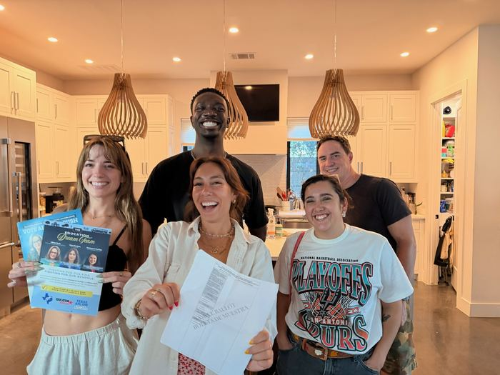
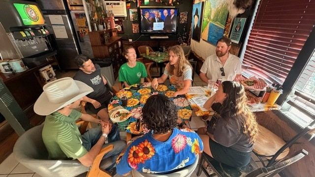
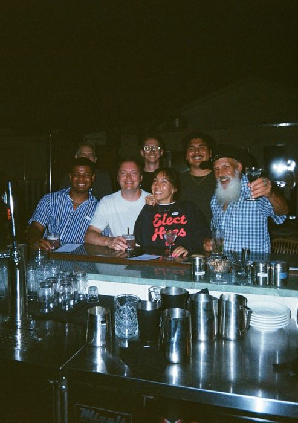
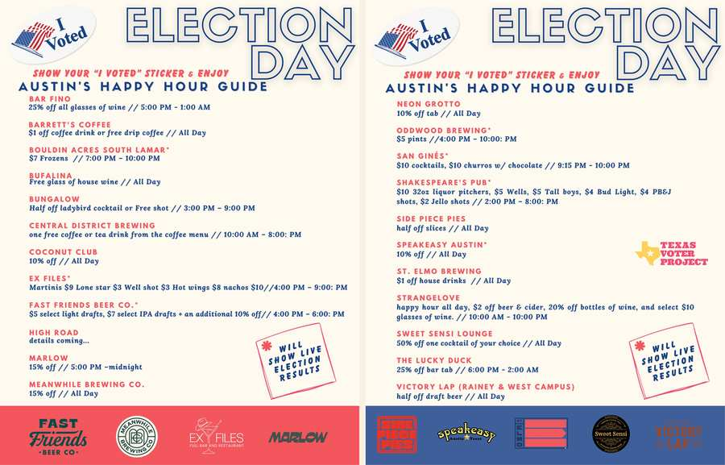
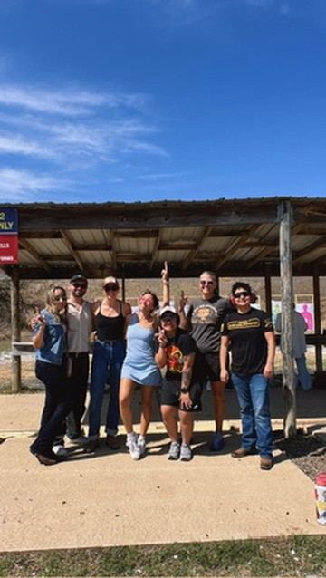
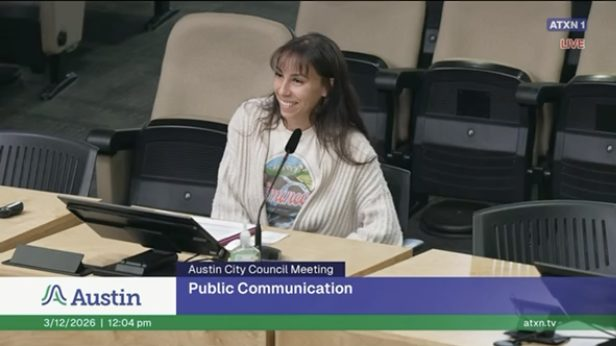
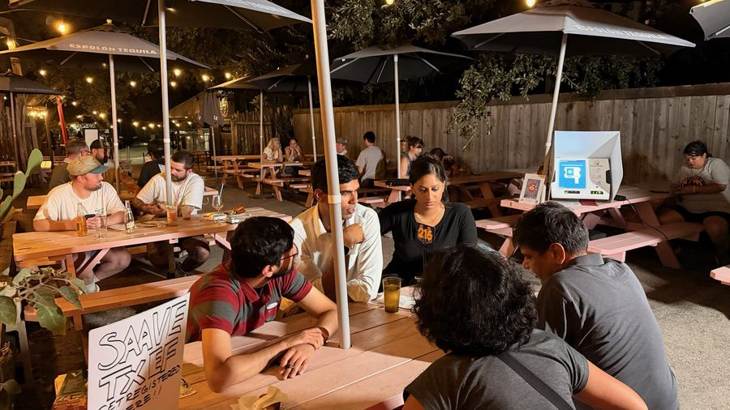
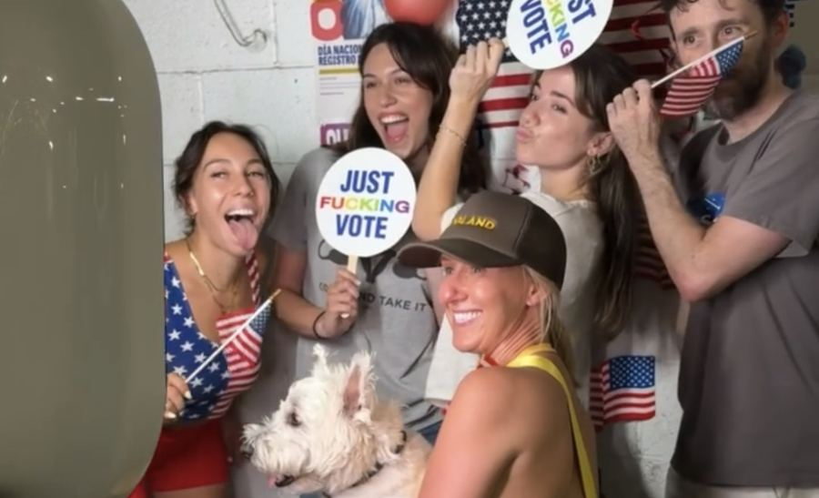

Cultivating third spaces. Building community power that outlasts Election Day.
These aren't transactional turnout events we disappear from once the polls close — they're the real, recurring gatherings where that power actually gets built.
Come find us.
Activations across registration, education, and turnout — Austin, San Antonio & East Texas, September through November.
Powered byA campaign-length raffle with Shelton Art Co — one winner takes home a custom print.
Dog-friendly bar pop-ups — mock voting machines and pledge-to-vote raffles.
Civic trivia nights at Knockout (1420 N. Main Ave.) — register to vote before the Oct 5 deadline, and play for a $100 bar tab.
District-by-district board game nights where candidates and voters meet as equals. No campaigning.
A national Strava challenge routing miles toward Election Day.
A free film screening and conversation on what oil and gas decisions mean for East Texas — with Este Poder and Commission Shift.
A Joy Resistance Social Club documentary night at Future Front (1900 E. 12th St.) — watch together, grab a drink, and talk it through.
A Joy Resistance Social Club vinyl night at BARk House Social (5020 E. Cesar Chavez St.) — spin some records and join our voting group before early voting opens.
A morning spin with purpose — DJ sets, local vendors, crafts, a photobooth, drink specials, and voter education, with URGE and Joy Resistance Network.
A HYROX-style fitness challenge where every station is a real barrier to voting, at an early voting site so you can vote right after.
Two-hour #PupsToThePolls selfie stops at early voting sites, timed with local run clubs — free dog treats and “I Voted” bandanas.
Run clubs route their run past a vote center on their pop-up day for a group #RunToThePolls selfie. Dogs welcome.
A ballot deep-dive over pizza — everyone researches one race to present to the group — half a mile from the South Austin Rec Center polls.
Vote at Carver Branch Library before polls close at 7, then crawl East 6th & 7th with the crew.
A Saturday early-voting kickoff — DJs, tarot readers, flash tattoos, Pups to the Polls, and civic info tabling.
Celebrate National Vote Early Day at participating bars, restaurants, and coffee shops across both cities.
Close out early voting at a dog-friendly party with Dogland — treats, bandanas, and a #PupsToThePolls selfie station.
The Make Austin Accessible parking petition has closed — residents signed on, picked the changes they wanted to see, and showed up to the city council vote. Read more on the Get Involved page's advocacy tier.
Every event, on the map.
Tap Map to see where everything is happening, then click any event to RSVP.
Open the full event hub →Proof, not promises.

Rotates to Primaries / Propositions depending on the election
Divide-and-conquer ballot prep — everyone researches one race, presents their pick in 2 minutes, and we build a shared voter guide together over pizza and BYO pinot.

District-by-district board game nights where candidates and voters meet as equals — no campaigning. D3 and D5 done; D1, D9, and D8 next.

Neighborhood bar crawls in Zilker, Bouldin Creek, and Barton Hills.

Partner discounts at local bars and restaurants for anyone with an "I Voted" sticker.

A firearm training day at the range for South Austin's LGBTQ+ community and women — learn, practice, and teach gun safety together, no experience required.

The parking petition — residents signed on, picked the changes they wanted to see, and showed up to the city council vote.

Sept 16 & 25 in Austin
Civic trivia nights on bar patios — a demo voting machine to try, partners registering voters at the next table, and a reason to stay for another round.

Sept 30 at Hi Sign Brewing, Austin · with Body Art Run Club
A run-club scavenger hunt with voter registration on site, a free photo booth, and an ACL ticket giveaway — patriotic colors encouraged.